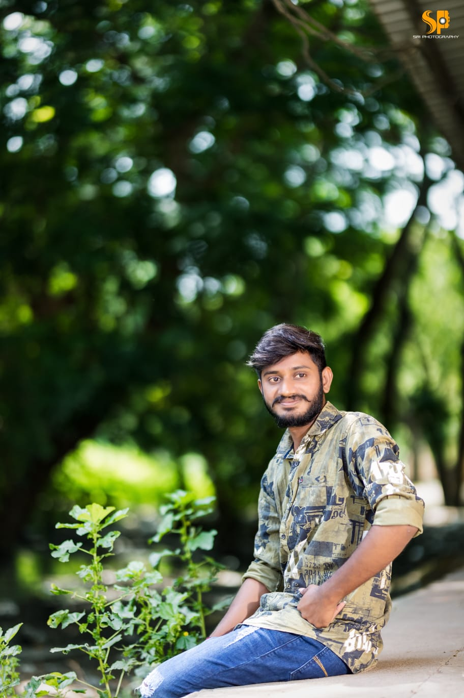

PUNEETH RAMISETTI
I BELIVE IN
About
I'am a Front End Developer.I enjou taking complex problems and
turning them into simple and beautiful by using HTML,CSS,Javascript.
I am an enthusiastic, self-motivated, reliable, responsible and hard
working person. I am a mature team worker and adaptable to all
challenging situations. I am able to work well both in a team
environment as well as using own initiative. I am able to work
under pressure and adhere to strict deadlines.
My portfolio
Some of my best projects sofar
- Image Maping
- List
- Emoji Creation
- Table Creation
Technical skils
- Html
- Css
- J.S
Contact Me
☎️-919948038118
✉️-puneethjaya143@gmail.com